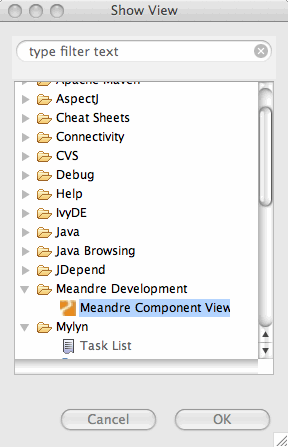

button to get the list of components.
button to get the list of components.
The Meandre Component View displays information about all components installed on the specified Meandre server. The Meandre Component View can be displayed by selecting Eclipse->Window->Show View->Other... From the popup window, expand Meandre Development and select Meandre Component View.

The Meandre Component View displays a total count and a list of all components and plugins installed on the specified Meandre server. For each component, it also displays the creator, date installed, jar files, input and output and property attributes. The view is accessed in the dock at the bottom view.
The View is docked at the bottom. Press the refresh button to get the list of components.
In the Meandre Component View, the context menu for a given component provides several tools for component management and development.